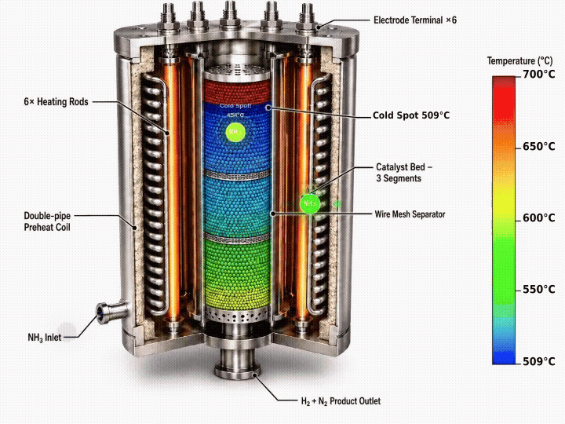

研究方向
本實驗室的研究遵循清晰的推進路線：從開發目標能源轉換反應觸媒、建立反應動力學速率方程，到設計工業規模製程，最終評估經濟可行性與環境影響。貫穿各階段的則是以本體論語意正規化為基礎的資料與知識層，將製程、安全與實驗資訊轉化為機器可讀的知識模型，支撐可靠且可追溯的人工智慧技術。
1. 能源轉換觸媒開發
我們針對三個關鍵能源轉換反應開發觸媒，採用兩個主要材料平台：金屬有機框架擔載觸媒提供高比表面積、可調孔隙結構與強金屬-載體相互作用；高熵合金觸媒則透過多元素協同效應，同時提升活性、選擇性與長期穩定性。原位光譜技術（液相穿透式電子顯微鏡與同步輻射 X 光吸收光譜）在操作條件下闡明失活機制並建立結構-活性關係。

熱催化
甲醇合成
開發銅基觸媒進行二氧化碳氫化製甲醇。聚焦於提升觸媒疏水性，抑制水誘導燒結與活性位點堵塞，改善高壓操作條件下的長期穩定性。
電催化
氧氣還原與氨氧化反應
開發高熵合金電催化劑，作為燃料電池氧氣還原反應中鉑的低成本替代材料；同一材料平台亦延伸至氨氧化反應，使氨可直接作為燃料、轉化為氫氣與氮氣，或應用於含氮廢水處理。透過多元素合金化調控 d 帶中心，優化含氧與含氮中間體的吸附強度，提升活性、目標產物選擇性與耐久性。
電催化
甲醇電氧化
金屬有機框架電催化劑用於鹼性電解質中甲醇電氧化，目標為電化學重整回收氫氣。透過金屬與框架之間的相互作用進行電子調控，抑制一氧化碳中毒並提升催化效能。
2. 反應器與分離單元建模、數位孿生與設計
我們在實驗室規模設計並建構熱催化固定床反應器與連續流電化學反應器。動力學模型整合至反應器設計方程式，優化轉化率、選擇性與能源效率。電化學反應器採用無薄膜雙電極設計，可在高達 80 bar 的壓力下操作，系統性評估關鍵性能指標，為後續放大與製程設計提供實驗基礎。

此外，我們針對熱催化固定床反應器、電化學流動反應器、氣體吸收塔與膜分離模組建立三維數位孿生模型，將模擬結果於空間上視覺化，用以診斷單元內部的非理想流動與傳輸行為，並探討最適幾何與操作條件。模型並持續與實驗量測校正，作為放大設計的依據。

3. 反應速率方程式建構
從實驗室規模反應器收集的動力學數據，透過非線性迴歸分析建立本質速率方程式。熱催化反應採用 Langmuir-Hinshelwood 與冪次律模型；電化學反應則建立反應速率與反應物濃度及施加電位關聯的冪次律速率方程式。驗證後的動力學模型以數值計算環境實作，並以使用者自定義反應器模組嵌入商用製程模擬平台，構成後續製程設計的定量基礎。
4. 程序系統工程：設計、控制與最適化
運用商用製程模擬平台，針對再生能源與綠色製造相關程序進行嚴格的穩態與動態模擬，涵蓋載體合成（甲醇、氨）、純化、裂解與重整、廢棄物加值、熱整合與發電。透過夾點分析熱整合、程序強化、全廠控制架構設計與不確定性下的最適化，最小化能源消耗、確保在負載追隨與間歇性再生能源供應下的可操作性，並確定最佳操作條件。

5. 技術經濟分析與生命週期評估
基於製程模擬結果，我們進行全面的技術經濟分析與生命週期評估。技術經濟分析量化資本支出、操作成本、淨現值、內部報酬率及均化電力成本，並進行多情境敏感度分析。生命週期評估評估從原料生產到終端使用的完整供應鏈溫室氣體排放與累計能源需求，為永續製程發展及國家能源政策提供環境績效數據。
6. 語意正規化與可靠人工智慧技術開發
化學工程領域的製程、安全與實驗數據，長期存在術語不一致、格式異質與情境隱含等問題，導致資料難以跨系統整合，亦削弱資料驅動模型的可靠性。我們以本體論為核心進行語意正規化：以標準化的語意表述格式建立具明確定義、階層關係與邏輯公理的知識表述，使模型具備可擴充性、機器可讀性、跨異質資料源的互通性，以及形式可驗證性。此類本體可作為大型語言模型及其他人工智慧系統的知識約束層，將輸出錨定於經整理與驗證的領域知識、抑制幻覺，並為每一步推論提供可追溯的證據鏈——這正是人工智慧導入安全攸關與工業場域的前提。
應用領域
工業安全
將製程安全知識正規化為知識圖譜，形式化偏差—原因—後果—防護措施關係、設備與物質分類，以及歷史事故案例。可支援機器輔助危害與可操作性分析、防護措施一致性自動檢核、類似事故的語意檢索，以及製程危害分析的可靠人工智慧助理，將專家的隱性經驗轉化為可傳承、可稽核的知識。
應用領域
智慧製造與數據分析
以共通語意模型標註感測器訊號、操作紀錄、品質數據與維護履歷，使分散式控制系統、製造執行系統與實驗室資訊管理系統無需逐一客製對應即可互通。所建立的可擴充知識層，可支撐即時監控、具可解釋因果路徑的異常診斷，以及在廠務組態演變下仍維持有效的決策支援。
應用領域
觸媒與製程知識庫
將觸媒合成條件、表徵結果、反應性能與製程模擬輸出，結構化為符合可尋找、可取用、可互通與可重複使用原則的知識庫，並明確記錄單位、資料來源與量測情境。此舉為機器學習模型提供高品質且機器可操作的訓練資料，並使實驗與模擬成果得以支援資料驅動的觸媒篩選與製程設計。